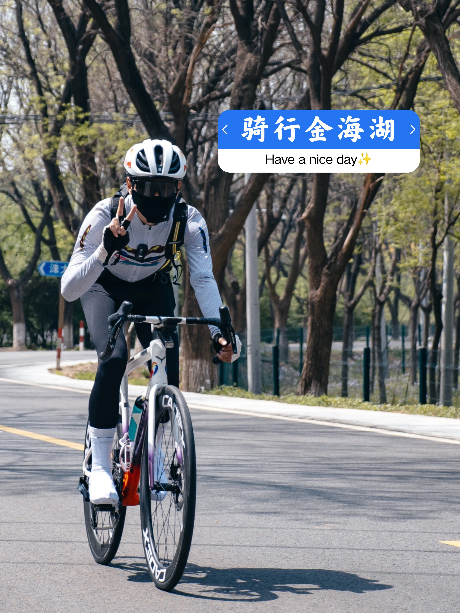

金海湖环湖骑行 + 月季季 / 看北京的海
五月主题 · 开阔湖面、平路有氧和花期一起上，是最有“度假感”的那条。
北京·平谷
金海湖环湖骑行
9.5h
170km
18km / 220m / 2.5h
L4 可执行
五道口出发


行程卡
| 字段 | 内容 |
|---|---|
| 区域 | 北京·平谷 |
| 主题 | 金海湖环湖骑行 |
| 总时长 | 9.5h |
| 预估自驾 | 170km |
| 骑行参数 | 18km / 220m / 2.5h |
| 强度 | 轻松-中等 |
| 适合 | 想看大水面 / 喜欢公路车轻有氧 / 朋友周末出片 |
| 一句话结论 | 金海湖五月最强的是“大水面 + 月季季 + 平路有氧”的组合，像北京版本的轻度假骑行。 |
路线摘要
金海湖五月最强的是“大水面 + 月季季 + 平路有氧”的组合，像北京版本的轻度假骑行。
🏞️ 目的地介绍
🌊 金海湖适合被当作“五月专属”的路线来看。别的季节它也能骑，但到了五月，花、风和水面的层次突然就对了：不至于像盛夏那样晒，也不像早春那样空。环湖骑这件事在这里不是刷难度，而是一路都比较开阔，心理感受很轻。
✨ 活动介绍
🌹 这条线最好玩的点，是骑行和度假感的边界很模糊。你会更容易停下来拍照、发呆、看风吹湖面，而不是一直盯着码表。小红书里“北京的海”这种说法反复出现，说明它的氛围感很稳定。五月又赶上月季季，路线会天然多一层颜色。
🍽️ 锚点补给
- 金海湖景区周边餐饮 · ★ — · 建议当天按片区高分店就近选
- 湖边咖啡/民宿餐吧 · ★ — · 更适合做放松补给，不必提前锁死
推荐行程安排
| 序号 | 活动 | 时长 | 备注 |
|---|---|---|---|
| 1 | 五道口出发，自驾去金海湖片区 🚗 | 2.0h | 平谷方向路程更长，尽量早点走 |
| 2 | 整车 / 热身 / 湖边开骑 | 0.4h | 建议自带车，现场租车选择不如雁栖湖稳定 |
| 3 | 金海湖环湖骑行 18km / 220m 🌊 | 2.5h | 平路有氧为主，夹少量起伏 |
| 4 | 湖边休息 / 月季季散步 / 补给 📷 | 1.0h | 适合把速度完全放掉 |
| 5 | 平谷片区午餐或咖啡收尾 🍽️ | 1.3h | 按当天片区高分店就近选 |
| 6 | 返程回五道口 | 2.0h | 下午返程车流可能变大 |
默认都按五月周末的一日线来排：早出发、主骑行放上午和中午前后、下午留给吃饭和松弛收尾。
为什么这个方案值得保留
- 五月主题感最强，花期和大水面是天然加分项。
- 骑行压力小，适合公路车轻有氧和朋友一起去。
- 整条线更像“出去度个短假”，不是纯训练。
风险与临门一脚
- 平谷距离更远，返程时段需要预留堵车机动。
- 如果当天大太阳，无遮挡路段体感会明显上升。
- 比起密云和官厅，挑战感没那么强。
证据入口
这批五月湖周骑行页优先做成轻量可发布版：先把路线、节奏、封面氛围和补给锚点整理出来；如果后面你要精修，我再继续补更重的点评信息卡和更多本地图。